3 Spatial Autocorrelation
3.1 Introduction

Aims
The aims of this practical are to:
- Understand why spatial autocorrelation needs to be considered when analysing spatial data.
- Understand the techniques we can use to assess for global and local spatial autocorrelation, including the underlying mathematics and assumptions.
- Test for spatial autocorrelation in ArcGIS and interpret outputs correctly.
Application
To that end, we’ll use county-level data from the 2024 US General election to investigate global and local spatial autocorrelation.
Data
The county-level data for this practical are available in [data/us-census] as follows:
- US county geometries for 2023, mapped at a 1:500,000 scale [Source]
- US county-level Presidential results for the 2024 elevation [Source], which includes:
- Democratic vote total [
votes_dem] and proportion (per_dem) - Republican vote total [
votes_gop] and proportion (per_gop)
- Democratic vote total [
Note that other datasets are present in this directory and will be utilised later in the unit.
Tools
Spatial Autocorrelation (Global Moran’s I) (Spatial Statistics Tools), Cluster and Outlier Analysis (Anselin Local Moran’s I) (Spatial Statistics Tools), High/Low Clustering (Getis-Ord General G) (Spatial Statistics Tools), Hot Spot Analysis (Getis-Ord Gi*) (Spatial Statistics Tools), Project (Data Management Tools), Neighborhood Summary Statistics (Spatial Statistics Tools)
3.2 Practical
3.2.1 Understanding spatial autocorrelation
According to Tobler’s Law (Tobler, 1970):
“everything is related to everything else, but near things are more related than distant things.”
In our exploration of spatial weights, we focused on the key concepts of proximity and adjacency (i.e., “near”, “distant”) and discovered how we can define and model those concepts using spatial weights \(w\) and the spatial weights matrix \(\mathbf{W}\).
One aspect of Tobler’s Law we didn’t engage with is the word related i.e., the concept of similarity. As a whole, Tobler’s Law relates to the interplay of proximity-adjacency and similarity. In the field of spatial analysis, we refer to this relationship as spatial autocorrelation, defined by Anselin (1988a) as a:
“functional relationship between what happens at one point in space and what happens elsewhere”
Or more simply:
“the degree to which an object or value is similar to nearby objects or values.”
Related concepts include temporal autocorrelation i.e., the degree to which a value at a point in time is similar to those in the past, or correlation17 more broadly i.e., a measure of association between two or more variables (but typically excluding a spatial or temporal component). It is also worth noting that we use the term autocorrelation because we are assessing self correlation i.e., the degree of similarity for a single dataset or variable (e.g., house prices), rather than multiple variables (e.g., house prices vs. employment opportunities), even if that single dataset could comprise many different observations.
3.2.1.1 Randomness and Clustering
When assessing the spatial distribution of objects and their values, we can imagine three potential scenarios: spatial randomness, positive spatial autocorrelation and negative spatial autocorrelation.
Spatial randomness relates to situations where there is no distinct spatial pattern. In this case, the location of the object is irrelevant to the phenonemon we are studying.
Spatial autocorrelation exists when we reject the hypothesis of spatial randomness, in favour of the presence of:
- positive spatial autocorrelation, where similar values are located nearby, and dissimilar values are distant i.e., clustered.
- negative spatial autocorrelation, where similar values tend be distant from each other, and dissimilar values are located nearby i.e., dispersed.
Here are some examples of different configurations, redrawn from Luc Anselin’s “An Introduction to Spatial Data Science with GeoDa”:
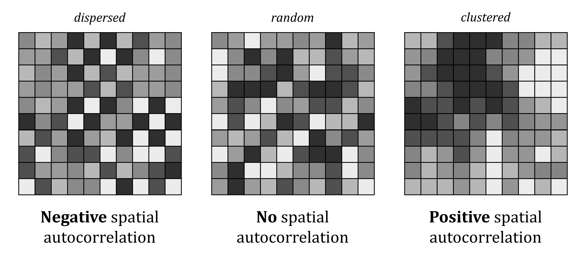
Pattern recognition is one of our defining human characteristics, see Biederman (1987), Shermer (2008) and Mattson (2014). As a result, while it is tempting to identify spatial structure in the example of spatial randomness above, the map was constructed using a random process.
Importantly, the scenarios of positive and negative spatial autocorrelation do not relate to the sign of the values (i.e., \(+|-\)), but attribute similarity alone. For example, positive spatial autocorrelation could relate to high values being found close to other high values (e.g., expensive houses near other expensive houses) or low values being found close to other low values (e.g., low-cost houses near other low-cost houses).
Can you think of any other examples of geographic phenonema which are characteristed by positive spatial autocorrelation?
3.2.1.2 Global vs. local
When assessing for spatial autocorrelation, this be analysed at a global level, which provides information on the degree of clustering, dispersion or randomness for a dataset as a whole i.e., on average, are expensive houses found near other expensive houses?
Spatial autcorrelation can also be analysed at a local level, which provides more detailed information on the locations of areas of clustering, dispersion or randomness e.g., which parts of the map show clusters of positive spatial autocorrelation?
3.2.1.3 Importance
As discussed in the lecture, spatial autocorrelation is of profound importance for spatial analysis. Understanding the spatial structure of our data is critical if we want to really understand the phenonema of interest. Spatial autocorrelation also dictates the methods that we can use. For example, many traditional statistical approaches18 assume independence of observations i.e., all observations in your data are independent from each other. This assumption is met when spatial autocorrelation is absent (i.e., spatial randomness), but is broken when spatial autocorrelation is present, rendering the results and our interpretations invalid.
As expert spatial analysts, we need to use methods which incorporate the spatial structure and autocorrelation present in many geographic datasets19.
In the next sections, we’ll use county-level data from the 2024 US General election to investigate global and local spatial autocorrelation and introduce the methods we can use to test for it.
3.2.2 Pre-processing
To begin:
Open ArcGIS, initialise a new project in the
practical-3directory, establish a connection todataand loadcb_2023_us_county_500k.shp, which contains the geometries for US counties20.
3.2.2.1 The contiguous United States
For simplicity, we are going to focus on the contiguous United States:
Use “Select by Attributes” to select all rows where the
STATE_NAMEis not Alaska, Hawaii, Puerto Rico, Guam, American Samoa, Commonwealth of the Northern Mariana Islands and United States Virgin Islands. “Export Selection” (n = 3,109) with a suitable name (e.g.,us_county_500k_contig) to the correct directory, and when complete, remove the original file from ArcGIS.
SQL expression
The following expression will select all rows which meet the following conditions (i.e., not equal to (<>) Alaska): STATE_NAME <> 'Alaska' And STATE_NAME <> 'Hawaii' And STATE_NAME <> 'Puerto Rico' And STATE_NAME <> 'Guam' And STATE_NAME <> 'American Samoa' And STATE_NAME <> 'Commonwealth of the Northern Mariana Islands' And STATE_NAME <> 'United States Virgin Islands'
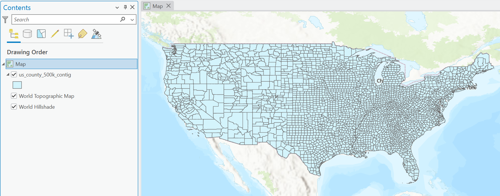
Our dataset is using a geographic CRS:
What is the EPSG code?
In our current Map View, this has resulted in significant distortion (i.e., flattening) of the geometries. We are going to switch to a conformal projected CRS to preserve the shape of the US counties:
Open the Geoprocessing tool Project. Use
us_county_500k_contigas the input and specify a suitable output name (e.g.,us_county_500k_contig_cf21). For the “Output Coordinate System”, useUSA Contiguous Lambert Conformal Conic(EPSG: 102004) and Run. When complete, remove any other layers from the Contents Pane.
Your output will resemble the following:
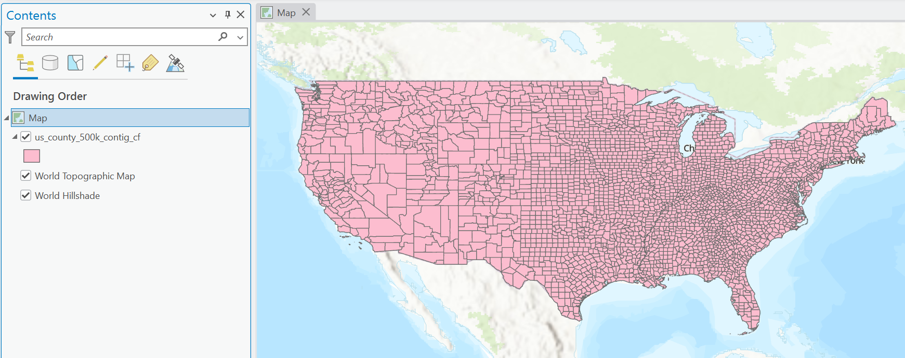
Importantly this is visually identical to the previous layer, even though we have changed the data CRS.
Can you think why this might be?
Answer
This is because the maps coordinate reference system is still using that of the first feature layer added (EPSG: 4269). While we have reprojected our county geometries, these are being reprojected again “on-the-fly” to match the map CRS.Update the map CRS to that of the
us_county_500k_contig_cflayer, which should now resemble the following:
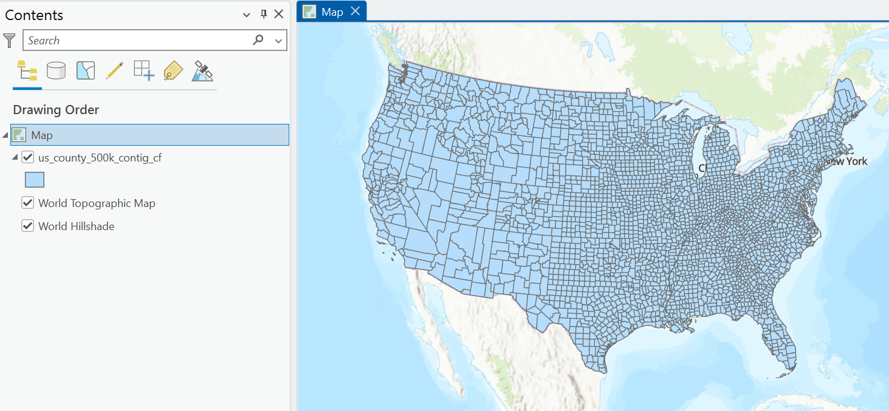
3.2.2.2 Election results
Next we are going to combine our geometries with the county-level election results for 2024.
Load
2024_US_County_Level_Presidential_Results.csvand use a dynamic table join to link the election results to our county geometries, joining using theNAMELSAD22 andcounty_namefields.
An alternative approach would be to join using the Federal Information Processing Series (FIPS) code, stored in GEOID and county_fips respectively. However, these are currently in different data formats (Text and Long i.e., numeric), which you can inspect via the Attribute Table → right click Fields → Data Type. The different data formats would preclude any matches i.e., \(01003_{text}\neq01003_{numeric}\). While we can address this via some data processing23, for now we’ll just use the county names.
The Attribute Table should now contain the following key fields:
- the number of votes cast for the Republican (
votes_gop24) and Democratic parties (votes_dem), the difference between them (diff) and the total votes cast (total_votes). - the Republican and Democratic vote share (
per_gop,per_dem) and the difference between them (per_point_diff).
What is the total number of votes cast for each party?
What is the average county-level vote share for the Republican party?
These values are close to the reported results, with minor differences partly explained by the removal of non-contiguous states, and the aggregation of votes at county rather than state-level. The data source is also not considered authoritative, but for the purposes of this practical, is sufficiently accurate to illustrative the spatial trends in vote share, and to assess for spatial autocorrelation.
To better understand the spatial variability in the election results:
Update the layer symbology based upon
gop_percand use colours and scaling of your choice. For example, usingUnclassed Colors,Red-Blue(reversed) and setting the min-max to 0 and 1 will produce the following output, which resembles typical visualisations, where reds denote Republican vote share, and blues denote Democratic vote share. The use of a 0-1 scale, rather than scaling by the min-max vote %, also produces a natural mid-point value of 0.5, where the vote is shared equally between the two parties.
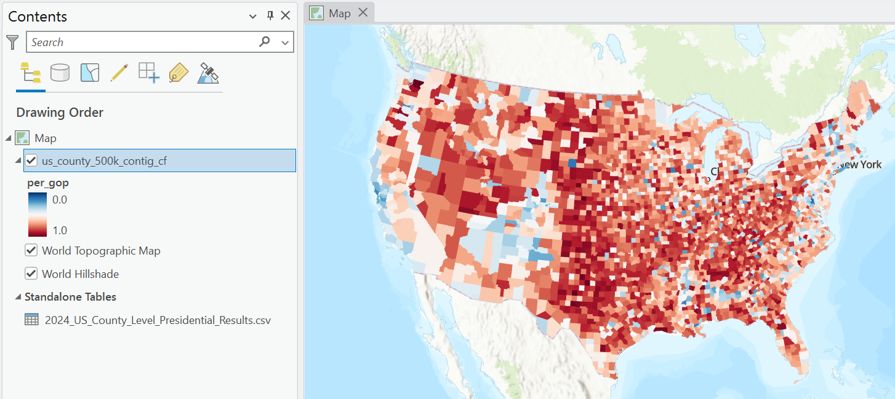
While this is an interesting visualisation, what are the limitations of this approach?
There are lots of interesting spatial patterns in this dataset:
Can you see any evidence of spatial autocorrelation?
While initial exploratory analysis is important, our pattern recognition abilities are not perfect. We might miss subtle but important patterns (a Type II error) or identify spurious or random patterns as significant (a Type I error). As a result, it is important that we use a statistical approach to identify and assess the significance of spatial autocorrelation.
3.2.3 Spatial Lag
Before we begin to explore spatial autocorrelation and start running ArcGIS tools, it is important that we understand the underlying mathematics. In particular, we need to introduce the spatial lag operator, which is one of the key use cases for the spatial weights matrix \(\mathbf{W}\).
The spatial lag captures the weighted value of a variable for each locations neighbourhood. In our case, this could be the weighted Republican vote share (per_gop) for the neighbourhood surrounding each US county, as illustrated below:
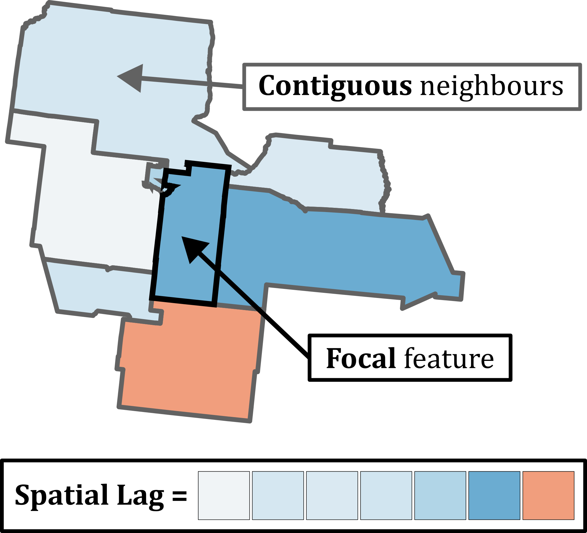
Mathematically it is defined as follows:
\[y_{sl-i}=\sum_{j}w_{ij}y_{j}\]
where \(y_{sl-i}\) is the spatial lag, representing the weighted neighbourhood value for the focal object, excluding itself (\(-i\)). This is calculated as the sum of the spatial weights \(w\) for row \(i\) and column \(j\) in the spatial weights matrix multiplied by the corresponding value for the neighbourhood location \(y_j\).
As an example, here is a sparse spatial weights matrix, subset to a single focal object \(f\). As \(f\) has seven neighbours and \(\mathbf{W}_f\) is row-standardised, \(w=1/7\)
\[\mathbf{W}_f=\begin{bmatrix} 1/7 & 1/7 & 1/7 & 1/7 & 1/7 & 1/7 & 1/7 \end{bmatrix}\]
If the values at those locations (e.g., gop_perc) are as follows:
\[y_{j}=\begin{bmatrix} 0.39 & 0.33 & 0.46 & 0.38 & 0.67 & 0.24 & 0.41 \end{bmatrix}\]
The products of the spatial weight \(w\) and the value \(y\) would be:
\[w_{ij}y_{j}=\begin{bmatrix} 0.06 & 0.05 & 0.07 & 0.05 & 0.10 & 0.03 & 0.06 \end{bmatrix}\]
The sum of these products is our spatial lag i.e., the weighted value for the neighbourhood:
\[y_{sl-i} = \sum w_{ij}y_{j}=0.41\]
When row-standardisation is used, the spatial lag is effectively a weighted average for the neighbourhood, because the weights will sum to 1. When binary weights are used and row-standardisation is not, the spatial lag would produce the sum of the neighbourhood values.
You may find it easier to understand this visually, so here is a schematic using the same weights and values, illustrating how the values (\(y\), gop_perc) are multiplied by the corresponding spatial weights (\(w\)), where the sum is the spatial lag (\(y_{sl-i}\)) for the focal feature = \(0.41\).
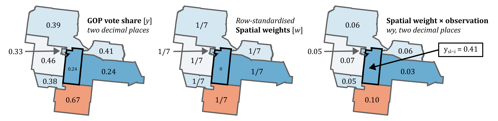
The above matrices and schematics illustrate the process for a single focal feature, and this would be replicated to create a spatially-lagged variable for all features in the dataset.
If you are interested you can check the calculations yourself, as these are based on the election results and weights for Sante Fe County, New Mexico (GEOID: 35049).
To help your understanding further:
Open the Geoprocessing tool Neighbourhood Summary Statistics, using the US county data as input, and selecting
gop_percas the “Analysis Field”. For “Neighbourhood Type” usingContiguity Edges Corners, for “Local Summary Statistic” useMean, andIgnore Focal Feature(because \(y_{sl-i}\)). I used the output nameus_county_gop_sl, wheresldenotes “spatial lag”.
Your output should resemble the following, where the US counties are symbolised using the spatial lag of gop_perc, using Queen’s contiguity. In effect, we have created a smoothed version of the original values.
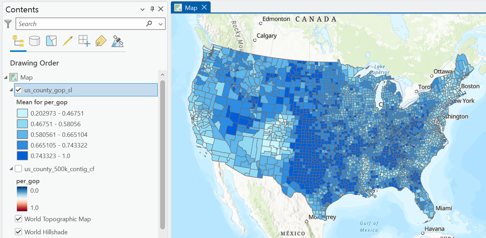
Inspect the Attribute Table of the new layer, which contains the original
gop_percvalues and the spatially-lagged variable_Mean, as well as the number of neighbours for each feature (NNBRS).
Are there any counties where the GOP vote share is noticeably different from the spatially-lagged variable?
The spatial lag operator underpins many spatial methods, including tests for spatial autocorrelation.
It is also directly influenced by our definition of the spatial weights matrix. Different approaches (e.g., contiguous vs. distance based, binary vs. continuous) will result in very different neighbourhood definitions and very different spatially-lagged variables.
3.2.4 Global spatial autocorrelation
The spatial lag variable is a key component of Moran’s \(I\) (Moran, 1948), one of the most commonly used statistics for global autocorrelation, defined as:
\[I = \frac{n}{\sum_{i}\sum_{j}w_{ij}}\frac{\sum_{i}\sum_{j}w_{ij}z_{i}z_{j}}{\sum_{i}z_{i}^{2}}\] where \(n\) is the number of observations, \(w_{ij}\) is the cell corresponding to the row \(i\) and column \(j\) of the spatial weights matrix \(\mathbf{W}\), and \(z_{i}\) and \(z_{j}\) are the standardised values of a variable of interest at locations \(i\) and \(j\) respectively. These are calculated as the difference between each value and the mean of all the values (\(z_{i}-\overline{z}\)).
3.2.4.1 Moran Plot
At first glance this function seem quite complicated, so before we jump into the maths, we’ll begin by exploring visually:
Find the mean (\(\overline{z}\)) of
gop_percand then create a new field in the Attribute Table ofus_county_gop_slusing Calculate Field (“Name” =gop_std, “Field Type” =Double). This field should contain the difference betweengop_percfor each county and the meangop_perc.
Repeat this process for the spatial lag variable (
_Mean, “Name” =lag_std).
Before we can progress further, there are four US counties with no contiguous neighbours (FID = 425, 533, 2017, 2615). To simplify our analysis:
Remove these rows from
us_county_gop_sle.g., Select by Attributes (DIST_NNBRS= 0) and then Delete.
Using our standardised spatial lag variable lag_std and standardised variable of interest gop_std, we can create a Moran Plot as follows:
Right click on
us_county_gop_slin the Contents Pane → Create Chart → Scatter Plot, and use the standardisedgop_stdvariable for the x-axis, and the standardised spatial lag variablelag_stdfor the y-axis.
We use standardisation for both the variable of interest gop_perc and the spatial lag variable lag_std to facilitate interpretation. By calculating the deviation from the mean (\(\overline{z}\)), this centers both datasets at 0, where above average values are \(z_{i}>0\) and below average values are \(z_{i}<0\). In turn, we can easily evaluate whether the focal feature and/or the neigbourhood have an above or below average Republican vote share.
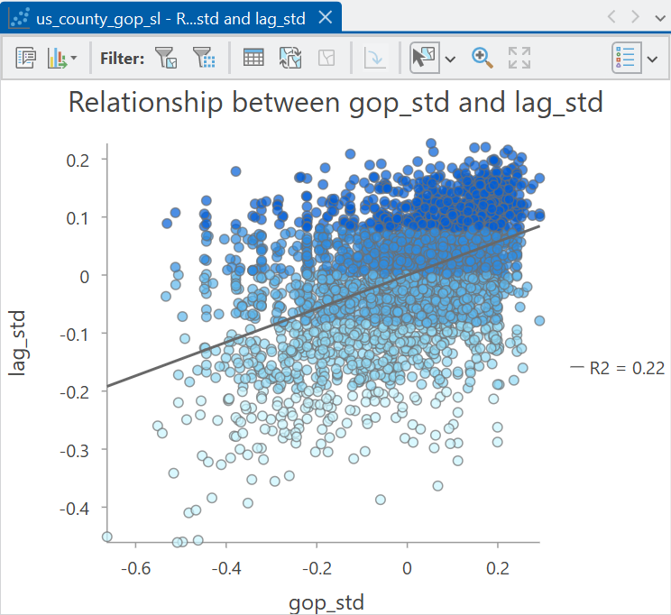
The Moran Plot is a useful tool for visual exploration of spatial autocorrelation and is simply a scatter plot of the variable of interest compared to the spatially lagged values25. The overall pattern of the data and the slope of the linear regression fitted to the values (Available in Chart Properties: \(0.2898637359\)) provides us with a great deal of information about the presence of spatial autocorrelation (either positive or negative) or spatial randomness.
In our case, the slope of the linear regression is positive (\(\sim0.29\)) i.e., as the standardised Republican vote share for a county increases, so too does the vote share of its neighbouring counties. This is indicative of positive spatial autocorrelation i.e., similar values are located nearby, and dissimilar values are distant.
By comparison, if the slope of the linear regression was negative, this would indicate that as the Republican vote share for a county increases, the vote share of its neighbouring counties would decrease. This would be indicative of negative spatial autocorrelation i.e., similar values tend be distant from each other, and dissimilar values are located nearby.
Finally, if there was no significant slope to the linear regression26, this would indicate the presence of spatial randomness i.e., the Republican vote share for a county is not meaningfully related to that of its neighbours.
Would you describe the county-level Republican vote share as clustered or dispersed?
Using the Moran Plot, we can infer that on average, positive autocorrelation is present i.e., Republican voting counties tend to be surrounded by other Republican voting counties. However, that doesn’t mean that this applies to every situation e.g., there may be instances where Republican voting counties are surrounded by Democratic voting counties, and vice-versa.
3.2.4.2 Calculating Moran’s \(I\)
The Moran Plot is a powerful visualisation that tells us a great deal about the presence or absence of spatial autocorrelation for a dataset as a whole. However, there are some unanswered questions:
Which parts of the map show clustering, dispersion or randomness?
How do we know that the observed pattern of spatial autocorrelation is meaningful? i.e., is it significantly different from spatial randomness?
We can answer the former by investigating local spatial autocorrelation, which is the topic of the second half of the practical.
We can answer the latter by calculating the Moran’s \(I\) statistic and its significance, rather than relying on the Moran Plot alone. This requires a deeper dive into the Moran’s \(I\) formula:
\[I = \frac{n}{\sum_{i}\sum_{j}w_{ij}}\frac{\sum_{i}\sum_{j}w_{ij}z_{i}z_{j}}{\sum_{i}z_{i}^{2}}\]
Before we describe the key parts of the formula, Moran’s \(I\) is assessing:
“How similar are observations to their neighbours, relative to the overall variation in the dataset?”
On the right hand side of the function, the denominator \(\sum_{i}z_{i}^{2}\) is a measure of the total variation in the data, while the numerator \(\sum_{i}\sum_{j}w_{ij}z_{i}z_{j}\) is a measure of the variation between each observation and its neighbours. The left hand side of the function \(\frac{n}{\sum_{i}\sum_{j}w_{ij}}\) accounts for the number of observations and their spatial weights. Normalising by these variables allows us to compare the Moran’s \(I\) statistic across different datasets, which might vary in size, neighbourhood definition, and the number of neighbours.
Describing these parts more fully, on the left hand side of the function we have the following:
\[\frac{n}{\sum_{i}\sum_{j}w_{ij}}\]
which is simply the number of observations (\(n\)) in the dataset (i.e., the number of US counties, \(n=3105\)) divided by the sum of all the non-zero weights in the spatial weights matrix (\(\sum_{i}\sum_{j}w_{ij}\)). When using a row-standardised spatial weights matrix, this will sum to the number of observations in the dataset i.e., \(n = \sum_{i}\sum_{j}w_{ij}\) (assuming all observations are connected27). If so, this part of the function cancels out and can be ignored. If row-standardisation is not used, then this ratio would need to be calculated.
If you are interested you can confirm this by using Generate Spatial Weights Matrix for the us_county_gop_sl layer, using Queen’s contiguity and row-standardisation. If you convert the output to a readable table via Convert Spatial Weights Matrix to Table, the sum of the WEIGHT field should equal the number of observations (\(n=3105\)).
On the right hand side of the function we have the numerator: \(\sum_{i}z_{i}^{2}\), which is the sum of the squared standardised values (\(z_{i}-\overline{z}\)). For example, if the Republican vote share is as follows:
\[z=\begin{bmatrix} 0.78 & 0.73 & 0.57 & 0.29 & 0.74 & 0.80 & 0.64 \end{bmatrix}\] The corresponding mean value is \(0.65\), which would result in standardised values of:
\[z-\overline{z}=\begin{bmatrix} 0.13 & 0.08 & -0.08 & -0.36 & 0.09 & 0.15 & -0.01 \end{bmatrix}\] The square of these values is as follows:
\[z_{i}^{2}=\begin{bmatrix} 0.0169 & 0.0064 & 0.0064 & 0.1296 & 0.0081 & 0.0225 & 0.0001\end{bmatrix}\]
resulting in the following sum. This is a measure of the overall variability of the data:
\[\sum_{i}z_{i}^{2}=0.19\]
The final piece of the puzzle is the numerator:
\[\sum_{i}\sum_{j}w_{ij}z_{i}z_{j}\]
Some of this might be familiar. The spatial lag variable is here, albeit with slightly different notation, which you’ll remember is the weighted value of a variable for each locations neighbourhood. This is present as \(w_{ij}z_{i}\), the only difference is we are using standardised values \((z_{i}-\overline{z})\) rather than the raw values, to capture the deviation from the global mean. As discussed above, this approach centers the dataset at 0, which allows us to easily identify whether values are above or below the average.
The spatial lag is multiplied by all other standardised values in the dataset (\(z_{j}\)), with the outputs summed. This is measure of the overall similarity of observations to their neighbours.
For example, if on average high values (\(z_{i}>0\)) are found near other high values and/or low values (\(z_{i}<0\)) are found near other low values, the numerator would be positive. By comparison, if on average high values (\(z_{i}>0\)) are found near low values (\(z_{i}<0\)), or vice versa, the numerator would be negative28.
To summarise:
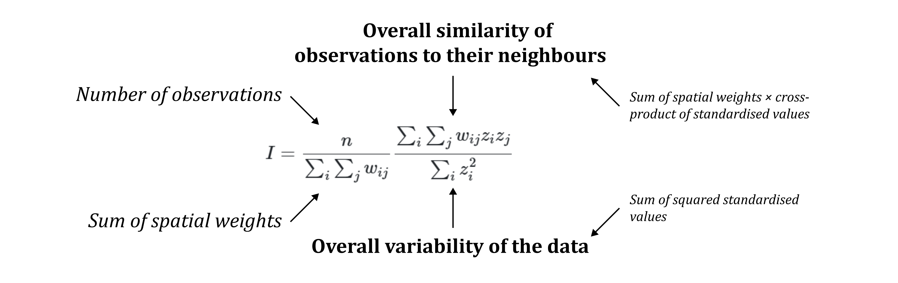
We can interpret the test statistic \(I\) as follows:
- If \(I\) > 0, observations are more similar to their neighbours than would be expected, given the overall variation in the dataset i.e., positive spatial autocorrelation.
- If \(I\) < 0, observations are less similar to their neighbours than would be expected, given the overall variation in the dataset i.e., negative spatial autocorrelation.
Moran’s \(I\) values range from \(-1\) (dispered) to \(1\) (clustered), where \(0\) denotes no spatial pattern.
3.2.4.3 Interpreting Moran’s \(I\)
So far, we’ve done quite a deep dive into Moran’s \(I\).
Actually running and interpreting Moran’s \(I\) in ArcGIS is surprisingly simple, and this can be achieved using the Spatial Autocorrelation (Global Moran’s I) geoprocessing tool.
I’ll reiterate this theme across the unit, but being able to run ArcGIS tools is not particularly impressive, especially given the wealth of information online, and generally very detailed ESRI documentation.
What is impressive is really understanding what the tools are doing, which requires us to take a look “under-the-hood” to investigate and question the mathematics and assumptions involved. Being able to demonstrate understanding of these tools and their foundations (e.g., spatial weights, the spatial lag operator), will set you apart from other spatial analysts who can click their way through practicals, but don’t really understand what’s going on.
Open the Geoprocessing tool Spatial Autocorrelation (Global Moran’s I), using
us_county_500k_contig_cfas the input, using Queen’s contiguity and row standardisation, and check “Generate Report”.
We can access the results of Morans \(I\) via the .html file, which is linked in the output messages (click “View Details”) and is saved in your project directory. The output table is also important:
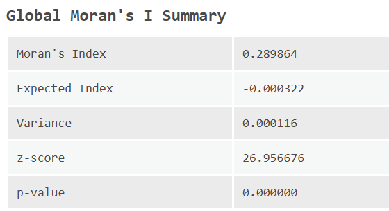
The “Moran’s Index” is \(I\) and you’ll notice this is identical to the value produced by our Moran Plot earlier: \(0.289864\). The regression line in the Moran Plot will always match the Moran’s \(I\) statistic when standardised values are used (i.e., mean centred: \(z_{i}-\overline{z}\)) and when the spatial weights matrix is row-standardised.
Other important values include the expected index \(E[I]\), which is the expected value of Moran’s \(I\) under the assumption of spatial randomness i.e., what \(I\) value would we expect if there is no spatial autocorrelation? This is calculated as follows:
\[E[I]=\frac{-1}{n-1}\] where \(n\) is the number of observations. For our dataset, \(E[I]=\frac{-1}{3105-1}=-0.000322\).
The variance \(Var(I)\) is a measure of how much the Moran’s I statistic would be expected to vary assuming spatial randomness29.
A particularly important statistic is the z-score which is measure of how far observed \(I\) is from \(E[I]\), in units of standard deviation. This is calculated as follows:
\[z = \frac{I-E[I]}{\sqrt{Var(I)}}\] If we plug our numbers from the output table into the equation:
\[z = \frac{0.289864-(-0.000322)}{\sqrt{0.000116}}\] we should be able to reproduce the z-score30.
The final statistic is the p-value which is the probability of observing a z-score (26.94) this extreme if the null hypothesis of spatial randomness is true, or more simply, if we randomly shuffled the values across the map (i.e., Republican vote share) and calculated \(I\) for each, how many configurations would show a larger Moran’s \(I\) than the one we observed? In our case, the probability is tiny, and much lower than typical thresholds for statistical significance e.g., \(p<0.05\) or \(p<0.01\). As such, we would reject the null hypothesis of spatial randomness.
Open the
.htmloutput, which summarises these values for you and aids interpretation.
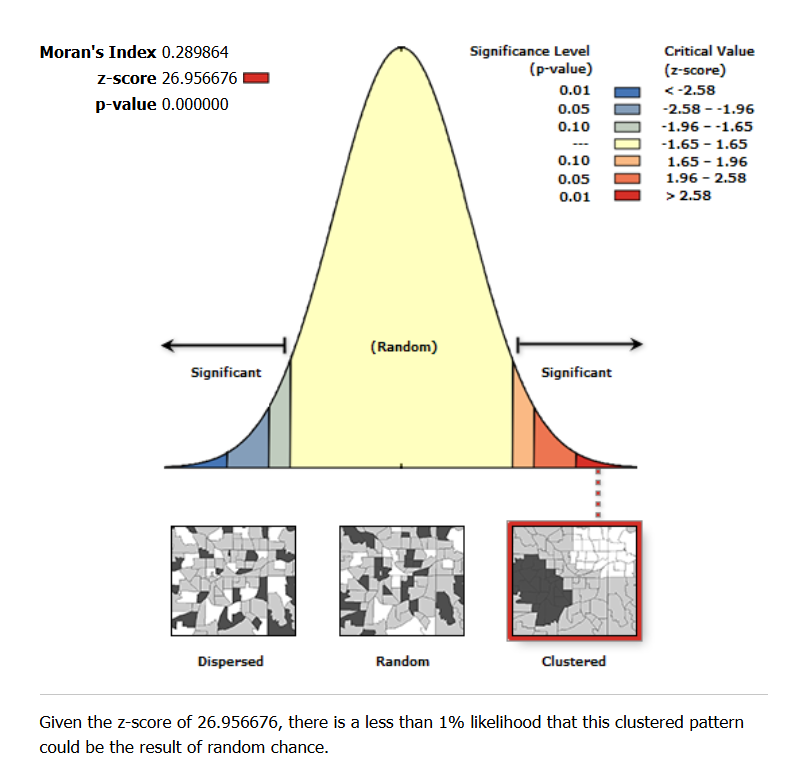
Here we can see the normal distribution of \(E[I]\) values against which our observed \(I\) value is being evaluated. While there is always a chance that our observed \(I\) might have arisen from spatial randomness, the probability is extremely low given the calculated z-score and p-value.
Based on all of the previous discussion and analysis, what is your interpretation of global autocorrelation for the county-level Republican vote share?
With your knowledge of the analytical approach, what are the key choices for you as the user?
3.2.5 Local spatial autocorrelation
Based on the analysis so far, we can conclude that statistically significant positive spatial autocorrelation is present for the county-level Republican vote share. While this is an interesting result, more work is needed to answer the following:
Which parts of the map show clustering, dispersion or randomness?
3.2.5.1 Calculating local Moran’s \(I_{i}\)
To that end we can use Local Indicators of Spatial Association (LISAs) (Anselin, 1995a) to assess for local spatial autocorrelation. Unlike Moran’s \(I\), which provides an indication of the degree of clustering, randomness or dispersion for a dataset as a whole, local indicators provide information on where spatial autocorrelation is present within a dataset.
In the previous section, we produced the Moran Plot, using a standardised variable gop_std and its standardised spatial lag lag_std. While this provides information on the presence of global autocorrelation, the use of standardised mean-centered values also allows us to investigate whether objects and/or their neighbourhoods showcase above or below average values. For example:
- if the focal object has an above average value and its neighbourhood spatial lag is also above average, we would describe this as a high-high (HH) cluster e.g., a high Republican voting county surrounded by other high Republican voting counties.
- if the focal object has a below average value and its neighbourhood spatial lag is also below average, we would describe this as a low-low (LL) cluster e.g., a low Republican voting county surrounded by other low Republican voting counties.
- if the focal object has an above average value but its neighbourhood spatial lag is below average, we would describe this as a high-low (HL) outlier e.g., a high Republican voting county surrounded by low Republican voting counties.
- if the focal object has a below average value but its neighbourhood spatial lag is above average, we would describe this as a low-high (LH) outlier e.g., a low Republican voting county surrounded by high Republican voting counties.
We can split the Moran Plot neatly into quadrats as follows:
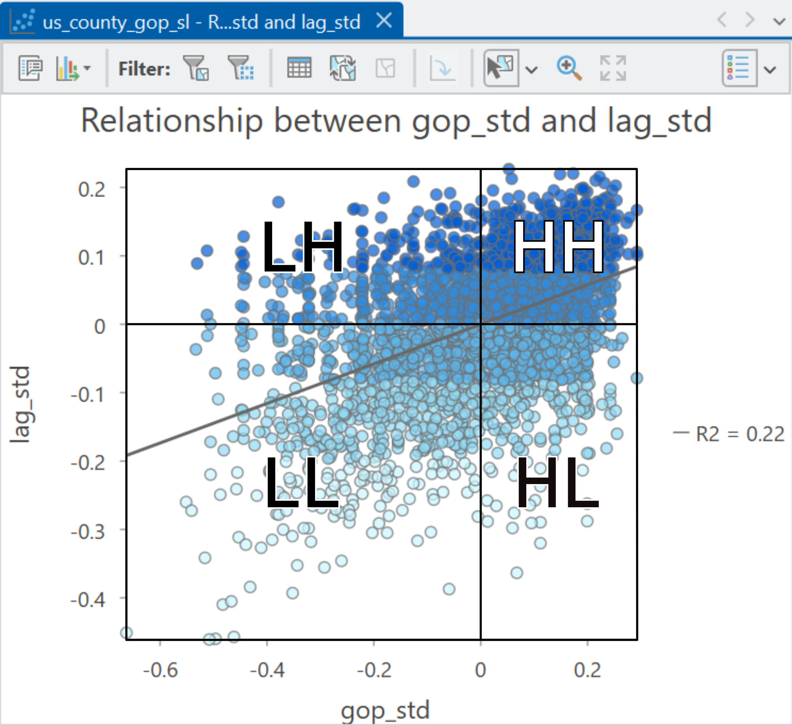
This approach assigns all objects to a quadrat. While useful for our understanding, our primary interest is in statistically significant clustering or dispersion i.e., if the values are only slightly above or below the average, is that meaningful?
To test this, we can use local Moran’s \(I_i\).
Much like global Moran’s \(I\), local Moran’s \(I_{i}\) evaluates the similarities or differences between observations and their neighbours, and whether these are greater than would be expected if the values had arisen from a spatially random process. Unlike Moran’s \(I\), which is applied globally for the entire dataset, local Moran’s \(I_i\) is applied to each object in turn, creating an index value (\(I_{i}\)) for each location, which we can interpret as the degree of local spatial autocorrelation.
Local Moran’s \(I_{i}\) is defined as:
\[I_i=\frac{z_{i}}{m_{2}} \sum_{j}w_{ij}z_{j}\quad\mathrm{where}\quad m_{2}=\frac{\sum_{i}z_{i}^{2}}{n}\] Some of the components should be familiar from our exploration of global Moran’s \(I\). For example, \(z_{i}\) are the standardised values, \(w_{ij}\) represents the spatial weight for locations \(ij\) and \(n\) is the number of observations.
\(m^{2}\) stands for the “second moment” of a distribution31, or more simply, the variance of the data, defined here as the average squared deviation from the mean for the entire dataset. This is calculated by standardising the values (\(z_{i}\)), squaring them (\(z_{i}^{2}\)), calculating the sum (\(\sum_{i}z_{i}^{2}\)) and then dividing by the number of observations (\(n\)).
Putting it all together, local Moran’s \(I_{i}\) is the cross-product of the standardised value for each location in the dataset \(z_{i}\) (i.e., is the location above or below average?) and the sum of the weighted standardised values of its neighbours \(\sum_{j}w_{ij}z_{j}\) (i.e., is the neighbourhood above or below average?). The cross-product is then normalised based on the overall variance of the dataset (\(m_{2}\)).
This normalisation is important because it places the observed deviations from the mean \(z_{i}\) within the context of the overall variability in the dataset, and makes \(I_{I}\) dimensionless, allowing for comparison of \(I_{I}\) for different datasets and measurement scales. Take the example below, which shows two different data distributions:
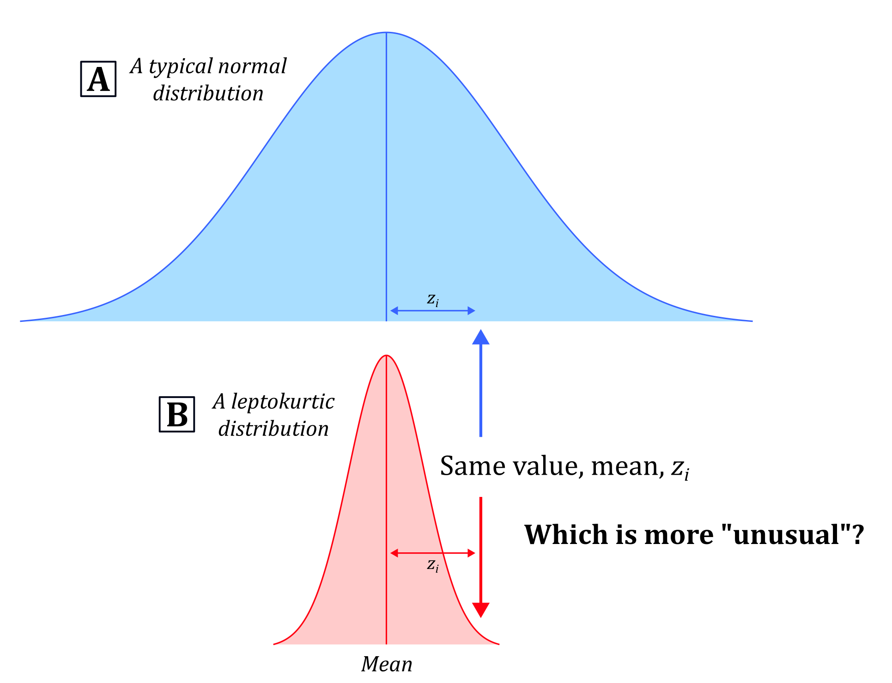
The datasets have the same mean, but very different levels of variance (\(m_{2}\)). If we pick a value at random (denoted by the vertical arrows), the absolute deviation \(z_{i}\) will be the same for both distributions, as these are measured relative to the mean. In [A], that value would be considered quite normal, being close to the mean and within the range of typical values. By contrast, that same value in [B] might be considered abnormal, being significantly different from most other values. This example illustrates that we need to interpret the absolute deviation \(z_{i}\) within the overall spread of the data, which is what normalising by \(m_{2}\) achieves32.
To summarise:
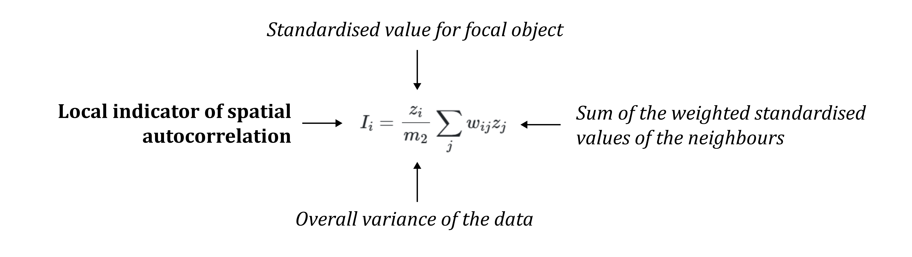
3.2.5.2 Interpreting local Moran’s \(I_{i}\)
As with global Moran’s \(I\), calculating and interpreting local Moran’s \(I_{i}\) in ArcGIS can be achieved using a single geoprocessing tool: Cluster and Outlier Analysis (Anselin Local Moran’s I).
Open Cluster and Outlier Analysis (Anselin Local Moran’s I), using
us_county_500k_contig_cfas the “Input Feature Class” and the Republican vote share as the “Input Field”. For consistency with global Moran’s \(I\), use Queen’s contiguity and row standardisation, but also check “False Discovery Rate (FDR) correction”. Keep all other settings as the default. Save the output feature class to the project directory e.g.,us_county_gop_lisa.
As with global Moran’s \(I\), local Moran’s \(I_{i}\) evaluates the statistical significance of the observed pattern of local spatial autocorrelation (\(I_{i}\)) through comparison with random permutations of the modelled values i.e., shuffling the Republican vote share across the locations and calculating \(I_{i}\) for each permutation. Increasing the “Number of Permutations” allows us to assess statistical significance with greater precision, at the cost of increased run time.
Another setting is the “False Discovery Rate (FDR) correction”, which is used to control the number of false positives (Type I errors) when running many tests at the same time. For example, for a given significance level of \(p=0.05\) and assuming spatial randomness, if you were to run 1,000 tests, 950 would be correctly identified as not significant (i.e., spatially random) but 50 would be incorrectly identified as significant (i.e., spatial autocorrelation). We would refer to these as false discoveries. Rather than using a simple threshold for statistical significance (i.e., \(p<0.05\)), FDR correction adjusts the threshold for each feature to minimise the number of false discoveries, with more information here.
When complete, you should be presented with a range of outputs, including a feature layer showing the locations of statistically significant HH, LL, HL, and LL clusters and outliers (colours adapted for contrast):
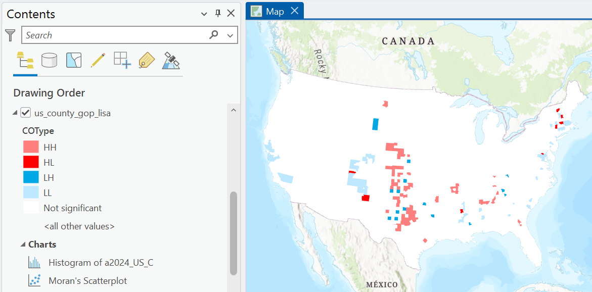
Cluster and Outlier Analysis (Anselin Local Moran’s I) also produces a Moran Plot, which can be found in the Contents Pane → Charts.
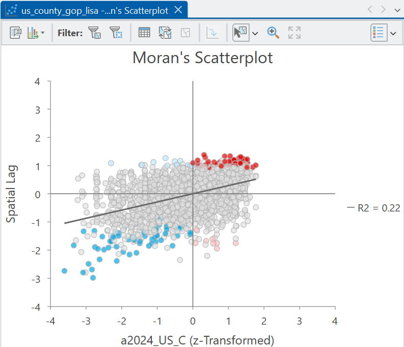
This is identical to the one we created earlier (note the regression \(R^2\) and slope), but here the statistically significant features have been identified in each quadrat.
The Attribute Table also contains some useful information, including the standardised variable (ZTransform) and spatial lag (SpatialLag), the number of neighbours (NNeighbors), and the cluster-outlier type (COTYPE i.e., HH, LL, HL, LH, not significant). The z-score (LMiZscore) and p-value (LMiPValue) are calculated in the same manner as for global Moran’s \(I\), except using values for each feature and neighbourhood, rather then the dataset as whole.
As always, the calculation of \(I_{i}\) is dependent on our specification of the spatial weights matrix.
How do the results change if a distance based approach is used?
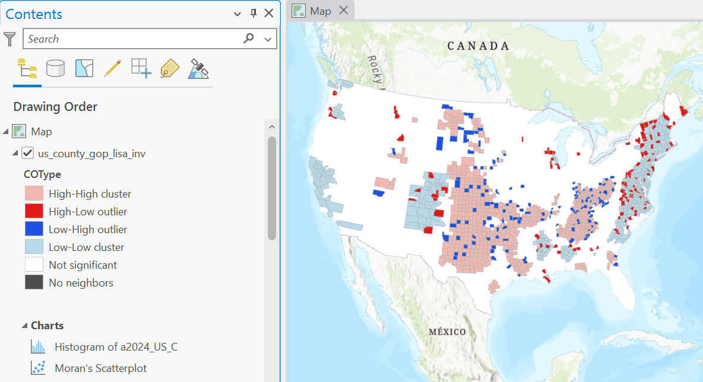
Answer
When using a distance based approach e.g., inverse-distance or inverse-distance squared, local Moran’s \(I_{i}\) has produced a much larger pattern of positive spatial autocorrelation (HH, LL). This is because Queen’s contiguity is a relatively conservative approach to defining neighbours, requiring a shared point or edge . By comparison, inverse distance approaches typically include a much larger number of neighbours, although those nearby still receive higher weights. In turn, while neighbours defined using Queen’s contiguity typically represent a very local neighbourhood (within the context of the scale of the data), distance based approaches can access information from a much larger neighbourhood, making it less sensitive to local variation.Based on all the above information:
Does the spatial distribution of positive local spatial autocorrelation (HH, LL) match your understanding of Republican and Democratic voting patterns?
What might explain the spatial distribution of outliers (HL, LH)? Remember these are indicative of negative local spatial autocorrelation i.e., divergence.
3.2.6 Alternative indices
Global Moran’s \(I\) (Moran, 1948) and local Moran’s \(I_{i}\) (Anselin, 1995a) are the most commonly used indicators of spatial autocorrelation, but they are not the only indicators. To finish the practical we’ll briefly introduce global and local indicators proposed by Getis and Ord (1992).
3.2.6.1 Getis and Ord’s \(G\)
Getis and Ord’s \(G\) is a global test, equivalent to Moran’s \(I\) and is defined as follows:
\[G = \frac{\sum_{i}\sum_{j}w_{ij}y_{i}y_{j}}{\sum_{i}\sum_{j}y_{i}y_{j}}\]
We won’t explore this in great depth, but broadly Getis and Ord’s \(G\) compares the spatially weighted sum of the cross-product of all neighbourhood values in the dataset \(\sum_{i}\sum_{j}w_{ij}y_{i}y_{j}\) with the unweighted sum of the cross-product of all values in the dataset \(\sum_{i}\sum_{j}y_{i}y_{j}\). If large or small values tend to occur together (i.e., positive spatial autocorrelation), then the numerator will increase, and so too will the test statistic \(G\).
Getis and Ord’s \(G\) provides information on whether there is a concentration of high or low values in a dataset.
How is this different to Moran’s \(I\)?
Answer
Getis and Ord’s \(G\) is a measure of positive spatial autcorrelation only, measuring the concentration of raw values. It does not consider negative spatial autocorrelation i.e., divergence, which is incorporated into Moran’s \(I\), which focuses on deviations from the global mean (i.e., standardised values \(z_{i}\)).You can read about the ArcGIS implementation of \(G\) here, while the pysal documentation may also be useful.
Run High/Low Clustering (Getis-Ord General G), using Queen’s contiguity, but don’t use row standardisation33. Use “Check Report” to produce a
.htmloutput and the summary table:
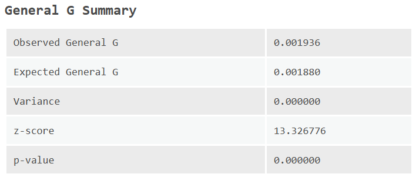
Based on the table and report, what is your intepretation of the Getis and Ord’s \(G\) results? Does this accord with those of Moran’s \(I\)?
3.2.6.2 Getis and Ord’s \(G_{i}\)
As with Moran’s \(I\), Getis and Ord’s \(G\) provides information on the degree of clustering for a dataset as a whole but not the local occurrences of that clustering. We can investigate those local patterns using Getis and Ord’s \(G_{i}\) and \(G_{i}^{*}\), defined as:
\[G_{i}=\frac{\sum_{j\neq i}w_{ij}y_{j}}{\sum_{j \neq i}y_{j}}\] and:
\[G_{i}^{*}=\frac{\sum_{j}w_{ij}y_{j}}{\sum_{j}y_{j}}\]
These approaches are very similar to the general form \(G\), except they are applied locally: \(G_{i}\) and \(G_{i}^{*}\) compare the spatially weighted sum of the neighbourhood values (e.g., \(\sum_{j}w_{ij}y_{j}\)) for location \(i\), with the unweighed sum of all the values in the dataset (e.g., \(\sum_{j}y_{j}\)). The only difference between the two approaches \(G_{i}\) and \(G_{i}^{*}\) is whether the focal feature (\(i\)) is included in the calculations.
The calculation is simply the ratio of the neighbourhood sum to the dataset sum. For example, take the following schematic, which shows a simple dataset of objects (\(A-F\)), their values (\(95-520\)) and their neighbourhood connections (black lines). Here we are using a binary weighting scheme, so \(w=1\).
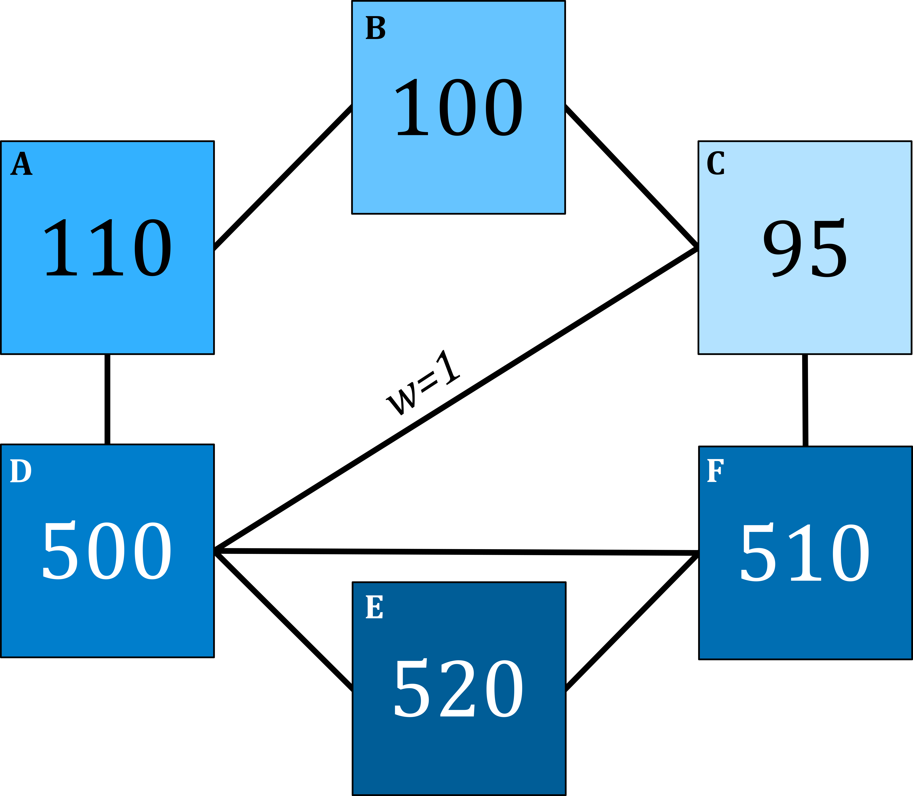
Taking object \(E\) as an example, the neighbourhood values are \(500\), \(510\) and \(520\), which would equate to spatially weighted sum of \(1530\)34. The unweighed sum of all the values in the dataset is equal to \(1835\). In turn our \(G_{i}^{*}\) statistic is as follows:
\[G_{i}^{*} = \frac{1530}{1835}=0.834\] i.e., how much of the total “value” of the dataset (~83%) is contained in the current neighbourhood (\(i\))? As with local Moran’s \(I\), the significance of the test statistic is evaluated against the expected local statistic, assuming spatial randomness, and you can read more on that here and here.
Run Hot Spot Analysis (Getis-Ord Gi*)35 using Queen’s contiguity and applying an FDR correction. Save the output feature class as
us_county_gop_gi.
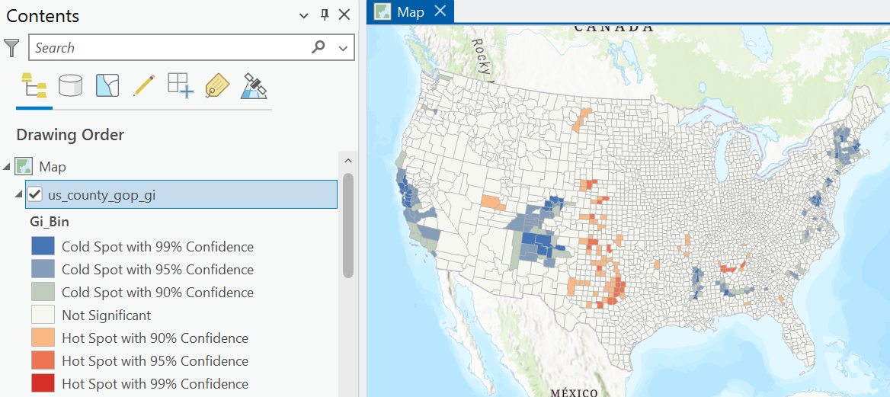
How do results of \(G_{i}^{*}\) differ from those of \(I_{i}\)?
3.2.7 Summary
While \(I\) and \(G\) (global) and \(I_{i}\) and \(G_{i}^{*}\) (local) will often generate complementary results, the results are not always identical and can sometimes diverge. Fundamentally, the two sets of indicators are evaluating different phenomenon.
What is local Moran’s \(I_{i}\) measuring?
What is Getis and Ord’s \(G_{i}^{*}\) measuring?
Answer
Fundamentally, the indicators of Moran (1948) are focused on similarity of neighbours relative to the mean (\(z_{i}\)) whereas those of Getis and Ord (1992) are focused on absolute similarity of high or low values in the raw data.Overall, while each indicator has specific strengths and use-cases (e.g., straightforward interpretation of “hotspots” and “coldspots” for \(G_{i}^{*}\)), those of Moran (1948) can be used to reveal additional behaviour, including the presence of global negative spatial autocorrelation (\(I<0\)) and local negative autocorrelation (i.e., HL and LH outliers identified using \(I_{i}\)).
Congratulations! You have completed the practical and should now be able to assess for autocorrelation and hotpots in ArcGIS, should have a strong understanding of the underlying mathematics, and should have an even greater appreciation of the importance of the spatial weights matrix.
3.3 Extra
The practical is based on county-level data from the 2024 US General election. In the data/us-census directory, I have also included the results for the 2008 US General Election i.e., Barack Obama vs. John McCain.
Repeat the analysis using the 2008 results, linking the geometries and voting results using the
NAMELSADandcounty_namefields.
How have the results changed over that 16 year period? Is voter spatial autocorrelation greater, less, or about the same? What does this reveal?
What is a limitation of our current approach? Hint: Sort the gop_per column for the 2008 results.
Answer
The county geometries, names, and/or FIPS codes might have changed in this period, so we have 80 counties of 3109 where there is no matching name. Instead, we should really use time-accurate geometries, available here.3.4 Resources
- Moran, P.A.P. (1948). The Interpretation of Statistical Maps. Journal of the Royal Statistical Society, B 10: 243–51.
- Moran, P.A.P. (1950). Notes on continuous stochastic phenomena. Biometrika, 37(1/2), pp.17-23.
- Anselin, L. (1995). Local Indicators of Spatial Association—LISA. Geographical Analysis 27, 93–115.
- Anselin, L (1996). “The Moran Scatterplot as an ESDA Tool to Assess Local Instability in Spatial Association.” In Spatial Analytical Perspectives on GIS in Environmental and Socio-Economic Sciences, edited by Manfred Fischer, Henk Scholten, and David Unwin, 111–25. London: Taylor; Francis.
- Getis, A. and Ord, J.K. (1992). The analysis of spatial association by use of distance statistics. Geographical analysis, 24(3), pp.189-206.